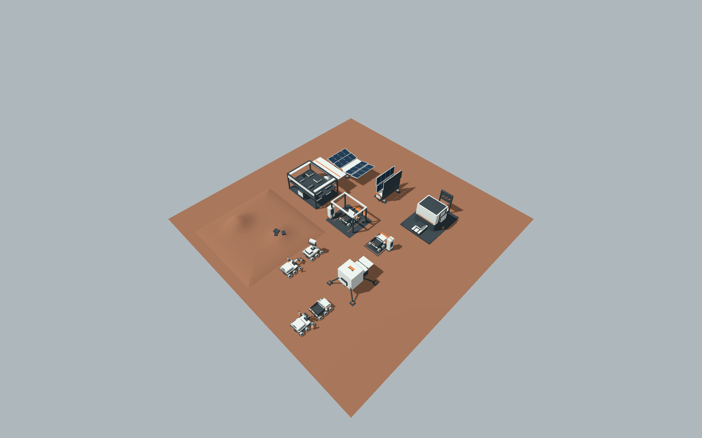
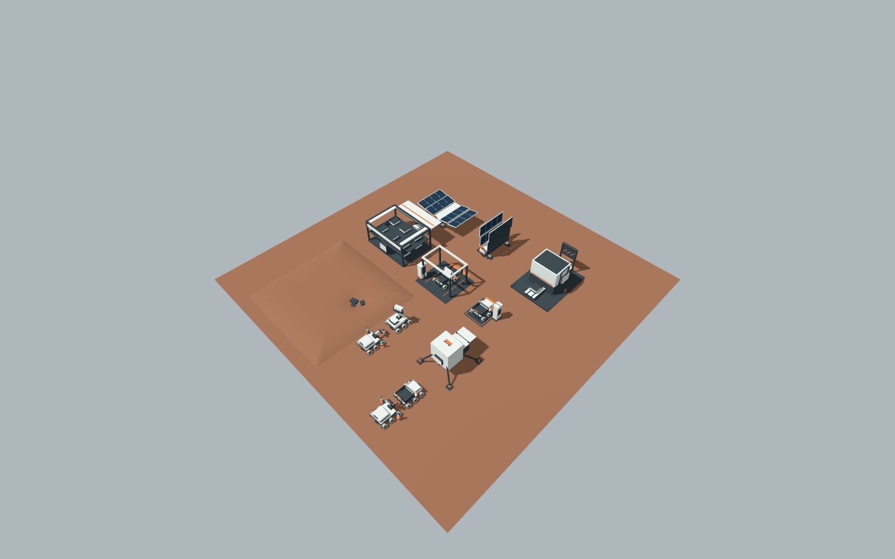

余电 / 美术看样 / 2026-10-05机器人与设施低保真模型看样
三类机器人、六类设施、货箱与回收杆候选，以及三版地表造型参考。地表贴图、环境地标和铁／铜资源素材尚未制作；本页不是完整游戏素材库。以下均为 Godot 4.7.2 / Metal 实机截图；统一灯光、材质与固定镜头。所有者最终视觉接受尚未进行。

正常指挥镜头 · 独立摆放样板。维修、充电、拖救和货物都是美术示意，未接正式游戏规则。
逐件与状态对照
 正常指挥距离；保留完整原图与实际屏幕占比。
正常指挥距离；保留完整原图与实际屏幕占比。 固定近景；大设施可能裁切，完整轮廓以正常镜头核对。
固定近景；大设施可能裁切，完整轮廓以正常镜头核对。地表前后
整平参考：左侧土坡被移除，矿点造型保留。
开挖参考：矿点附近变成低洼。三版均非正式 T3 数据或矿物结算。
本轮确认了用途轮廓、空有载和主要开闭姿态。小接口、盖板及细微扫描动作在正常距离下仍有限；整场状态提示与性能需正式接入后另验。高保真、UV、烘焙和 Astra 制作尚未启动。